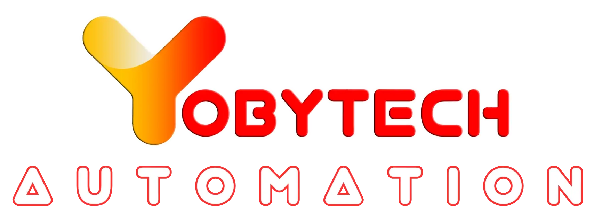
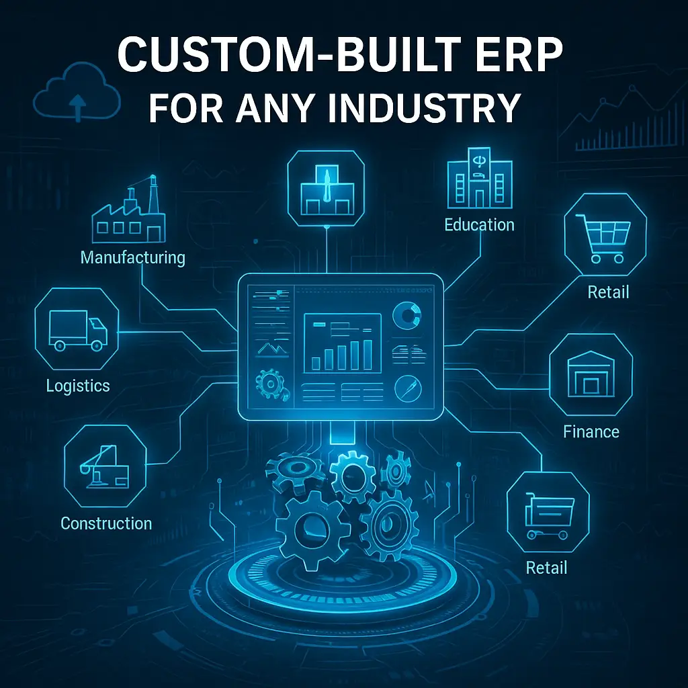

YoByTech control suiteOne intelligent layer.
One intelligent layer.
Purpose-built control experiences for industry, agriculture, people and infrastructure—each connected to live data, automated action and clear operational insight.

Connected automation that turns live industrial data into clear decisions, faster action and more resilient operations.
Purpose-built control experiences for industry, agriculture, people and infrastructure—each connected to live data, automated action and clear operational insight.
Future-ready automation systems that streamline workflows, reduce costs and make complex operations easier to see, understand and control.

YoByTech Automation is a next-generation technology company delivering AI, IoT and ERP-based solutions for organisations modernising their operations.
We simplify digital transformation by combining real-time monitoring, intelligent control systems and cloud-based analytics into scalable, interoperable and future-ready solutions.
To empower organisations through intelligent automation that improves operational efficiency, sustainability and compliance.
Focused platforms for asset intelligence, campus operations and business automation—designed to replace disconnected workflows with one clear system.
Connect legacy setups, centralise control and use predictive insight to build resilient operations without losing sight of performance or compliance.
Expand a capability to see how YoByTech connects technology, operations and people.
Modular automation configured for each industry's realities—whether retrofitting legacy systems or building smart operations from the ground up.
“We are committed to delivering a broad range of services that meet the business needs of our customers at competitive prices—understanding their needs, building trusted relationships and solving real application challenges together.”
Tell us what you need to monitor, automate or transform. We’ll help shape the right path—from the first device to enterprise-wide intelligence.